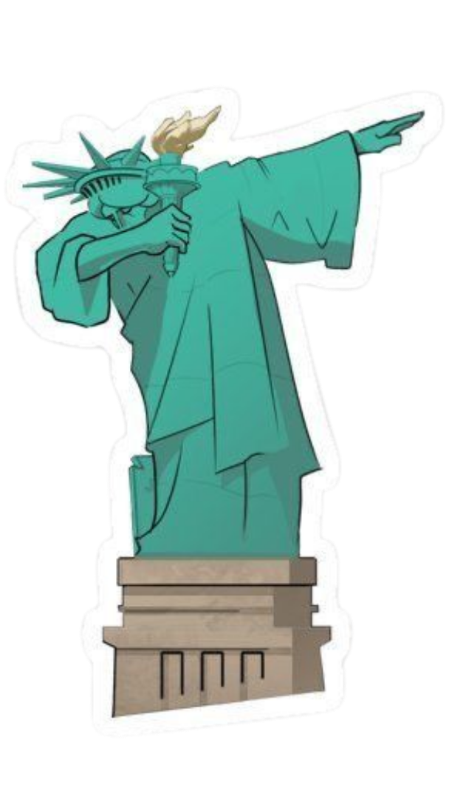
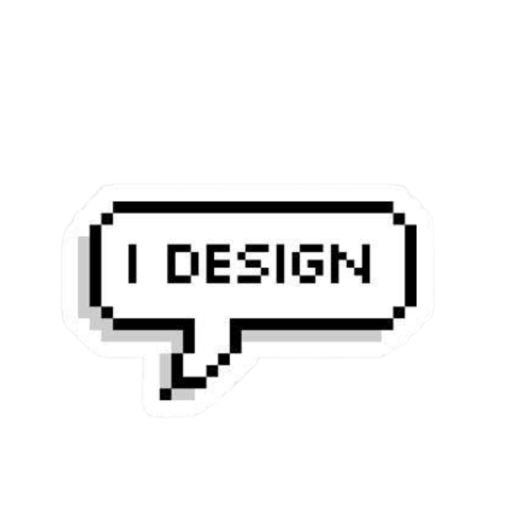
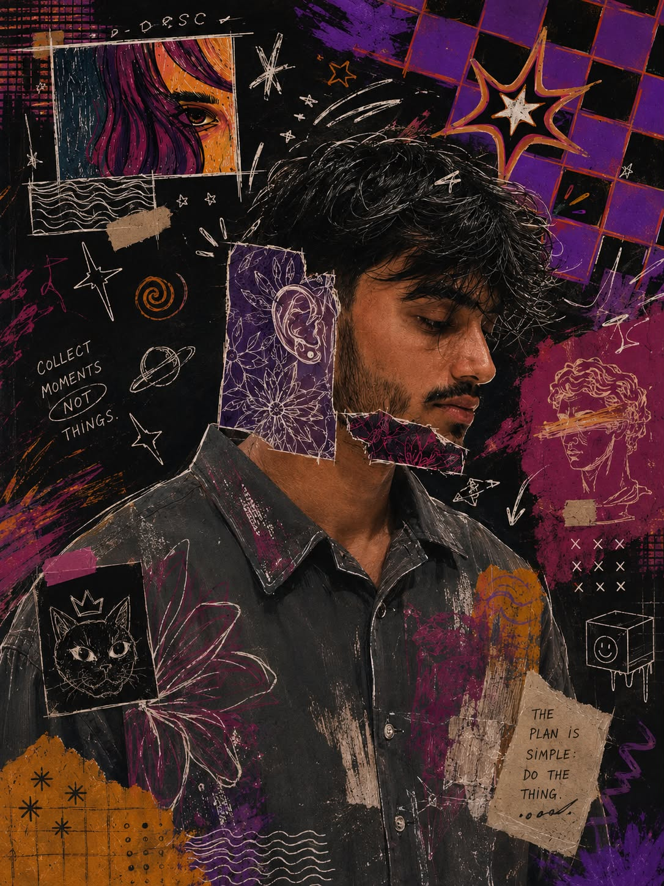
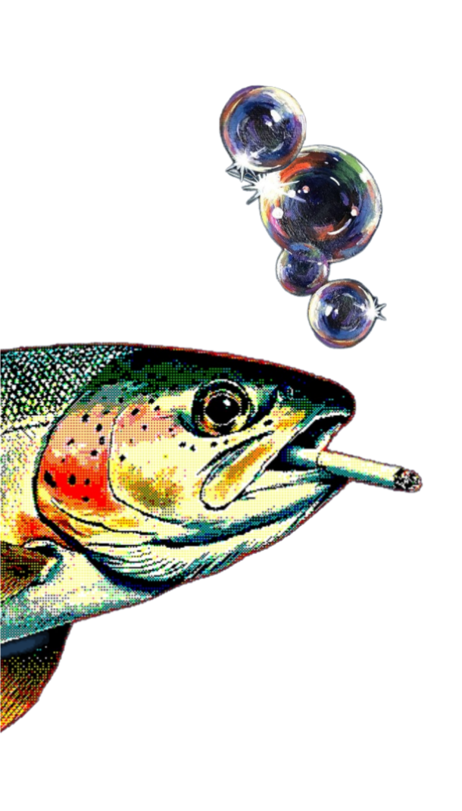
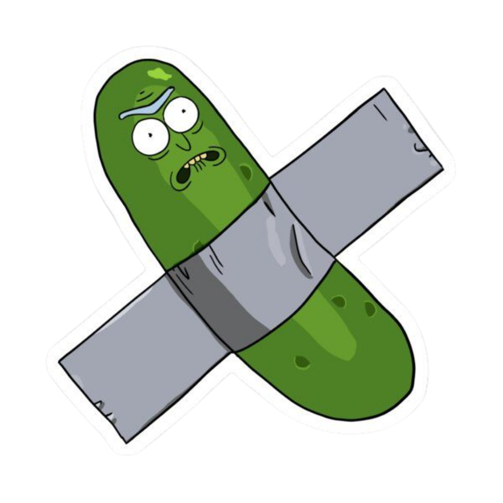
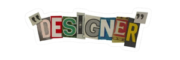
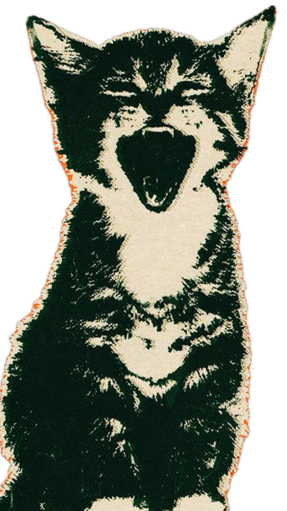
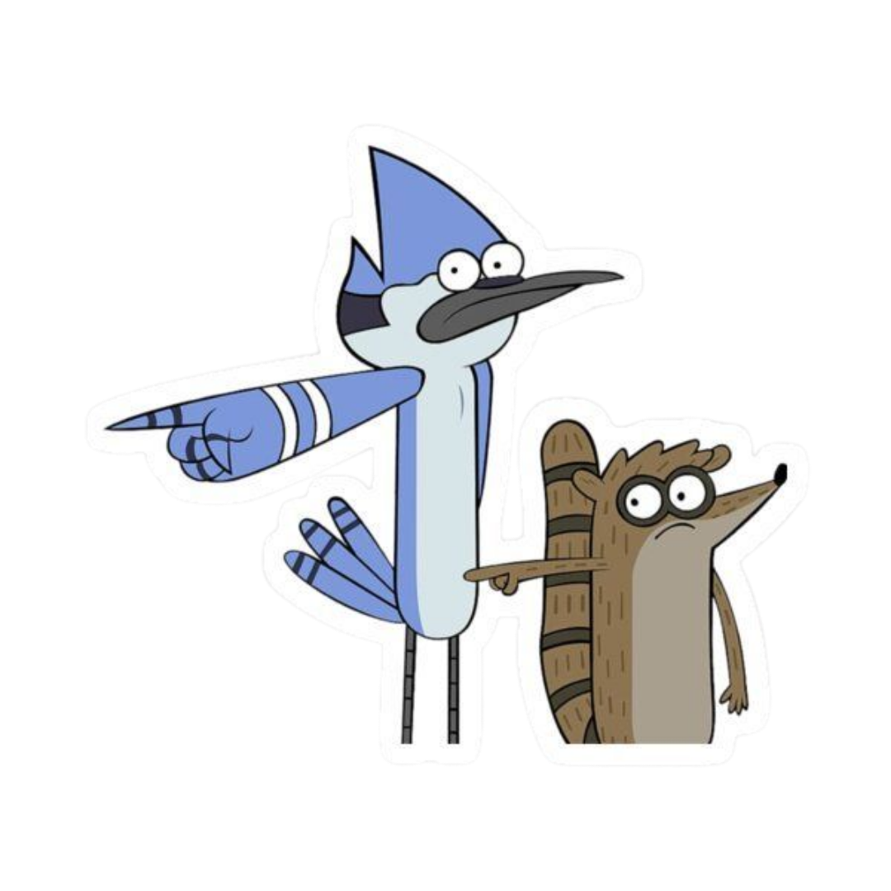
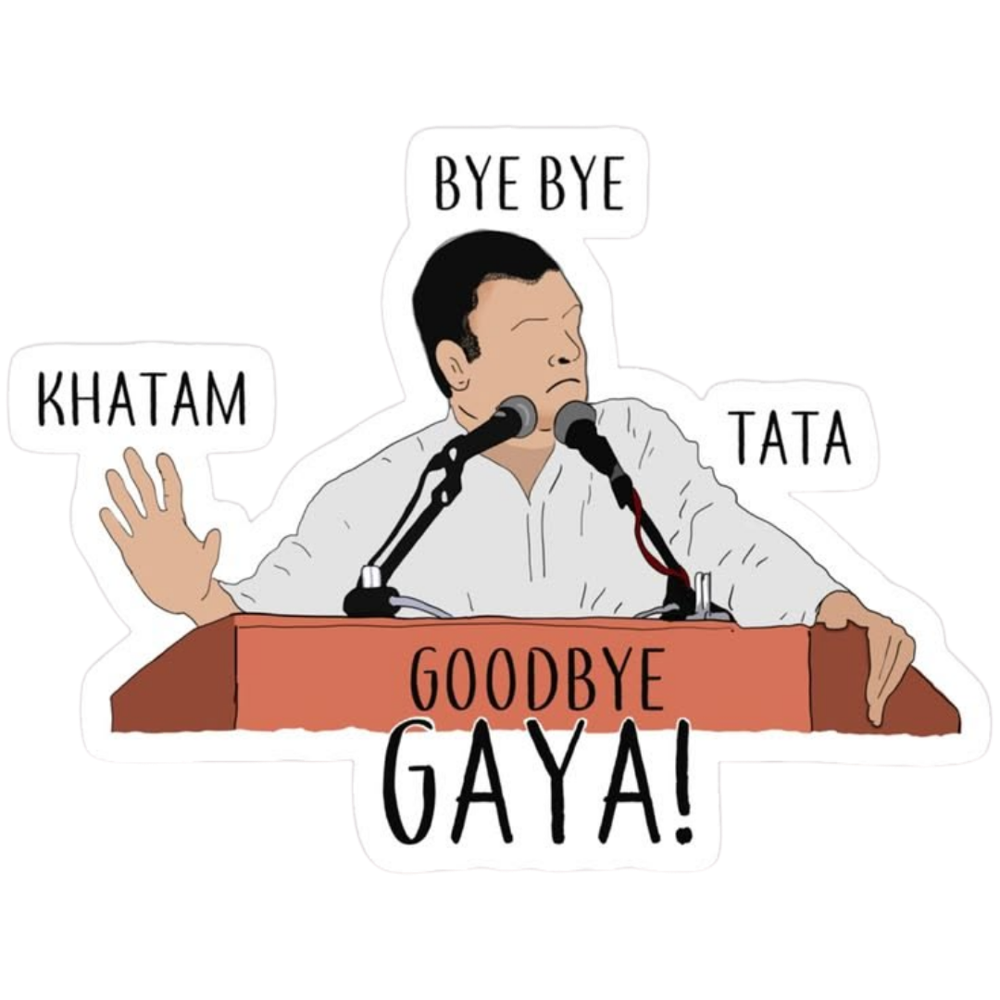

~ if lost, follow the tracks ~
hey, I'm Dibyant /\/\
powered by curiosity (and questionable amounts of solder smoke) :)
- who am i? (about)
- things i've built (projects)
- tiny toolkit (skills)
- paper trail (resume)
- say hi (contact)
click on a section, or just keep scrolling :) the train's already moving ;)

who am i? (a brain dump)


I'm a full-stack developer who genuinely cares about the frontend the part people actually touch. I build complete systems end to end: schemas, APIs, and interfaces that don't feel like an afterthought. I've also got a real enthusiasm for IoT and embedded hardware, so every so often you'll catch me soldering servos instead of shipping components same curiosity, different soldering iron. ;)
things i like
- → Component libraries that don't fight me
- → A UI that feels right before it needs a redesign
- → APIs that return exactly what the docs promised
- → Occasionally, an ESP32 and too many servo wires
stack, roughly
React, Next.js, TypeScript, Tailwind CSS, Node.js, Express, PostgreSQL, MySQL, Prisma that's home base. Java, Python, and C++ show up for coursework and backend work. ESP32 and embedded hardware show up because I can't help myself. :O



commit message: it works now? warning: contains real opinions about tabs vs spaces (tabs) this one took longer than it should havethings i've built
a pile of projects, each with its own story click one

sizes = roughly how often I use each one npm install personality i debug with print statements and i'm not sorrytiny toolkit
(everything in the toolbox, no particular order)


all aboard, I guess this ticket does not expire (unlike my motivation on mondays)paper trail (tucked in the back)
hover the envelope — the resume's inside
boarding pass
Dibyant Bhatta
Full-Stack Developer & Maker

this space intentionally weird ctrl+z is my emotional support shortcut reply time: faster than my CI pipelinesay hi! (write me a letter)
click on the mailbox